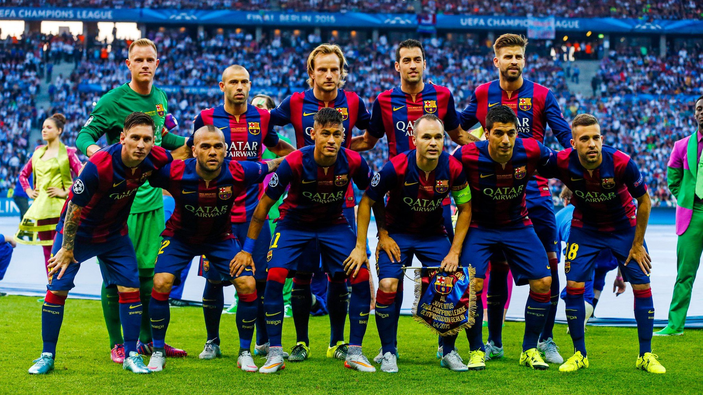

{% extends 'shablon.html'%}

{% block title %}
    Декада 2010-х в футболе
{% endblock %}


{% block content %}
    <h1>Главная страница</h1>
    <br>
  <br>
  <br>
  <hr class="rtl">
  <br>
  <br>
  <br>

  <div id="carouselExampleFade" class="carousel slide carousel-fade">
    <div class="carousel-inner">
      <div class="carousel-item active">
        
      </div>
      <div class="carousel-item">
        
      </div>
      <div class="carousel-item">
        
      </div>
      <div class="carousel-item">
        
      </div>
    </div>
    <button class="carousel-control-prev" type="button" data-bs-target="#carouselExampleFade" data-bs-slide="prev">
      <span class="carousel-control-prev-icon" aria-hidden="true"></span>
      <span class="visually-hidden">Предыдущий</span>
    </button>
    <button class="carousel-control-next" type="button" data-bs-target="#carouselExampleFade" data-bs-slide="next">
      <span class="carousel-control-next-icon" aria-hidden="true"></span>
      <span class="visually-hidden">Следующий</span>
    </button>
  </div>
{% endblock %}